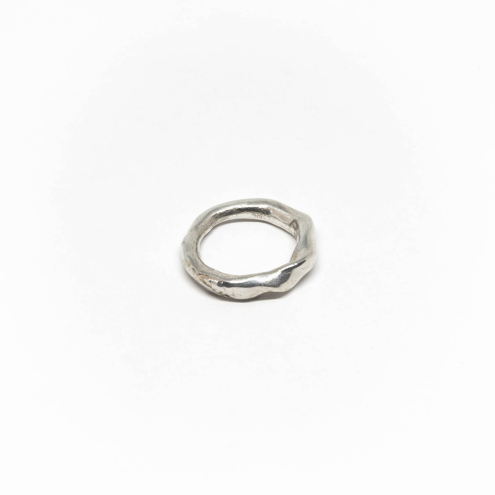
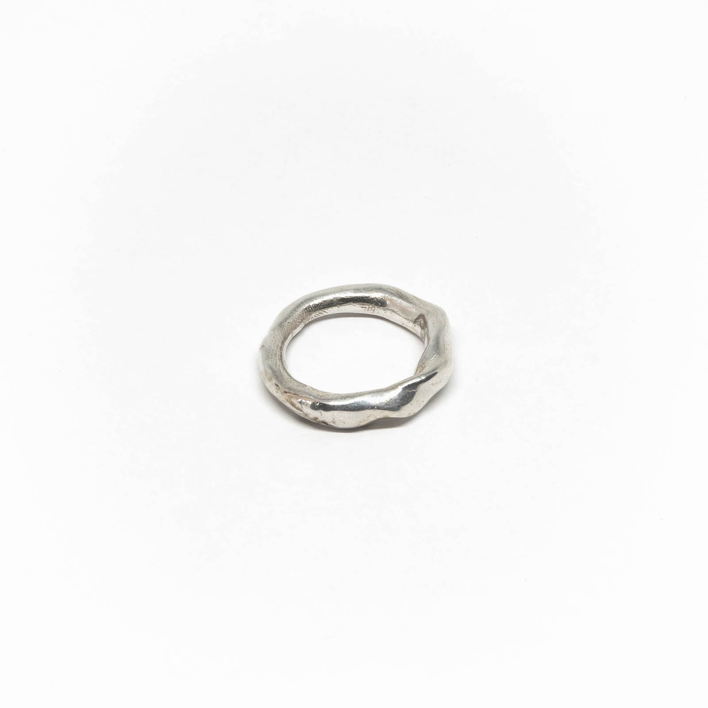

make your
own ring
Always wanted to design your own silver ring? Or are you looking for a perfect personal gift for a friend or loved one?
The box includes everything you need to get started
- Jeweller’s wax
- Instruction book
- Ring sizer
With this box you will be able to unleash your creativity and have your own unique ring cast in sterling silver and polished by a professional goldsmith.

This is what some of the finished silver rings look like

 



< swipe left
How does it work


< swipe left
Get familiar with the wax
Shape your unique ring
Send it in
Receive your polished solid silver product
Get your own box and start building
Workshops
Are you interested in learning more after you’ve made your first ring?
In our bilingual workshops we will go deeper in the lost wax technique.
Filing, sawing and soldering will be a part of the deal and bringing your own stones or objects you would like to integrate in your jewellery is a possibility too.
Send me an email or follow the Instagram account and I will keep you updated with upcoming dates.


< swipe left
Markets
- 20/09/2020 Museum market Amsterdam
- 27/09/2020 Swan market Utrecht
- 04/10/2020 Sunday market Amsterdam
- 11/10/2020 Swan market Den Haag
- 01/11/2020 Sunday market Amsterdam
- 12/12/2020 Swan market Delft
- 13/12/2020 Westergas Christmas market Amsterdam
- 20/12/2020 Swan Christmas market Rotterdam


This project is made possible by Sophia Zobel
I am a jewellery designer born and raised in Amsterdam (NL). After having studied goldsmithing in Schoonhoven (NL) and having done my apprenticeship with Peter Vermandere and Philip Sajet, I continued working as a goldsmith and 3D Designer for several brands in Berlin (DE). After having co-founded the jewellery collective Argyria, I now work and create in the Netherlands, where I also give workshops in wax carving for jewellery.